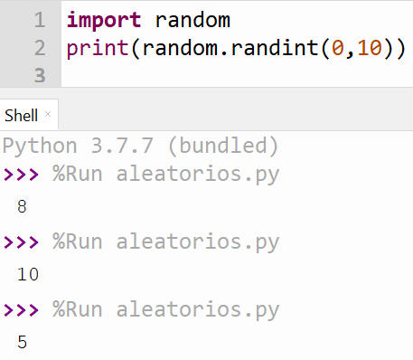
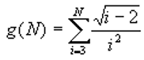
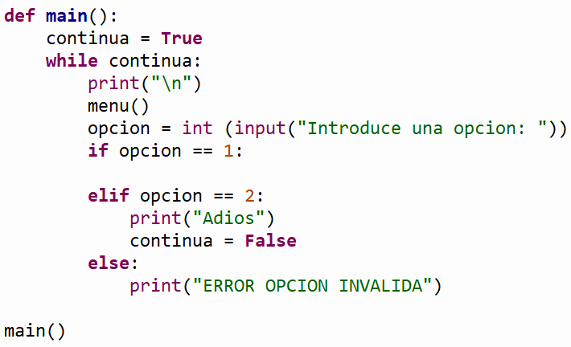

.

Descripción:
- Desarrolla, en conjunto con el
profesor, algunos problemas que implican el uso del ciclo for.

Objetivos:
- Aplicar el ciclo for en la
solución de problemas.
- Aplicar los conocimientos
sobre funciones.
- Utilizar funciones acompañadas
de la estructura "for".

Modalidad:

Instrucciones:
-
La función randint(a,
b) de la librería random, genera un
número aleatorio entero entre a y b
(incluyendo a y b).
Ejemplo: Genera un número
aleatorio entre 0 y 10, incluyendo 0 y 10.

-
Implementa las siguientes
funciones haciendo uso del ciclo for:

Ejercicios:
.
-
La función
aleatorios1 () que despliega en pantalla
40 números aleatorios entre 0 y
80.
- La función
aleatorios2 () que despliega en pantalla
20 números aleatorios entre 20 y
90.
-
La función
aleatorios3 () que despliega en pantalla
30 números aleatorios entre
-20 y 50.
-
La
función g (n) que
recibe un número entero n mayor o igual a 3 y regresa el resultado
de la siguiente sumatoria:

Casos de prueba:
Input: Número de opción (4.
Función G)
Input:
Valor de n (entero)
Output:
Resultado de la sumatoria (real con dos decimales)
|
Input:
4
Input:
6
Output:
0.32
|
Input:
4
Input:
15
Output:
0.57
|
-
La función
imprimeNcadaVez (n) que recibe un número y
utilizando los ciclos while y for, desplegará en pantalla n
números consecutivos. Cada
n números, la función deberá preguntar al usuario
si desea continuar, de ser así seguirá con la impresión de la
secuencia de números siguientes en pantalla; en caso contrario
termina la función.
Casos de prueba:
imprimeNcadaVez (5)
deplegará en pantalla lo siguiente:
0 1 2 3 4 Desea continuar (S/N): S
5 6 7 8 9 Desea continuar (S/N): S
10 11 12 13 14 Desea continuar (S/N): S
15 16 17 18 19 Desea continuar (S/N): N
imprimeNcadaVez (6)
deplegará en pantalla lo siguiente:
0 1 2 3 4 5 Desea continuar (S/N): S
6 7 8 9 10
11 Desea continuar (S/N): S
12 13 14 15 16 17 Desea continuar (S/N): N
imprimeNcadaVez (7)
deplegará en pantalla lo siguiente:
0 1 2 3 4 5 6 Desea continuar (S/N): S
7 8 9 10 11 12 13 Desea continuar
(S/N): N
-
La función menu
()
que despliegue el siguiente menú en pantalla:
-
La función
main ()
que utilice la función menu para desplegar el menú
correspondiente y de acuerdo a la opción seleccionada por el
usuario le dé la oportunidad de ejecutar cualquiera de las
funciones que han sido construidas. Utiliza el estatuto de control
if anidado.
Recuerda que la captura de datos debe
ser realizada en la sección del main. Debes utilizar el ciclo
while para que se cicle el programa hasta que el usuario
introduzca la opción de salir.
-
En el
script principal
manda llamar a la función main.
-
Guarda tu archivo como:
F_Matricula.py


Recursos:

Especificaciones
de entrega:
- Formato de entrega: py
- Nombre de los entregables: F_matricula.py
- Medio de entrega: Se entrega en la sección de Laboratorio:
Ciclo For
Instrucciones para enviar tus archivos por Canvas:
- Haz clic en la actividad de Laboratorio: Ciclo
For.
- Haz clic en el botón de Entregar
tarea.
- En el fólder de Carga del archivo,
haz clic en el botón de Examinar y localiza el
archivo *.py. Si necesitas agregar más archivos, haz clic en
+Agregue otro archivo, haz clic en el botón de
Examinar y localiza el otro archivo *.py.
- Cuando hayas terminado de subir tus
archivos, haz clic en el botón de Entregar tarea y
listo!!
|